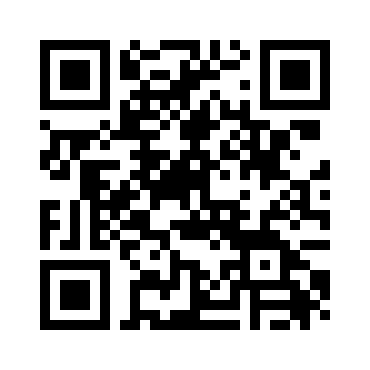
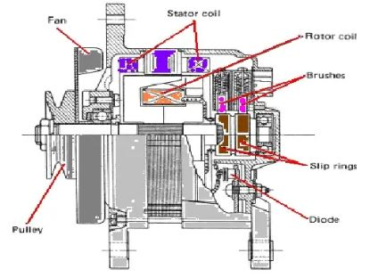
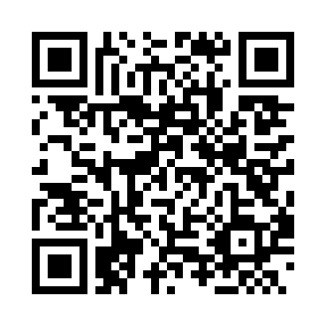
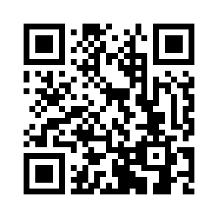

Selamat Datang
Media ini membantu peserta didik memahami identifikasi, komponen, rangkaian, dan cara kerja sistem pengisian elektronik kendaraan dengan IC regulator serta menerapkannya dalam pemeriksaan praktik.
Mulai Belajar →| SMK | SMK MAHAKARYA CIKUPA |
| Kelas | XII TKR |
| Mapel | Kelistrikan Otomotif Kendaraan Ringan |
| Guru | Wasja, S.Pd |
🎯 Tujuan Pembelajaran
- Menjelaskan pengertian dan fungsi sistem pengisian elektronik pada kendaraan.
- Mengidentifikasi alternator, IC regulator, rotor, stator, rectifier/dioda, dan terminal rangkaian.
- Membaca dan menjelaskan gambar rangkaian sistem pengisian dengan IC regulator.
- Menjelaskan perubahan aliran arus saat kunci kontak OFF, mesin berputar rendah, dan putaran tinggi.
- Melakukan pemeriksaan dasar sistem pengisian sesuai prosedur kerja dan K3.
- Menganalisis hasil pengukuran dan menyimpulkan kondisi sistem pengisian.
📝 Pretest
Uji pengetahuan awal.
📚 Materi
Pelajari sistem dan komponen.
🎯 Quiz
Latihan interaktif Wayground.
📋 Post Test
Evaluasi hasil belajar.
🔧 LKPD
Jobsheet praktik pemeriksaan.
📝 Pretest
Kerjakan 10 soal pretest sebelum mempelajari materi.
📝 Buka Google Form PretestQR CODE PRETEST

Scan QR Code untuk membuka Pretest.
📚 Materi Pembelajaran
1. Identifikasi
Pengertian dan fungsi sistem pengisian elektronik.
2. Rangkaian
Rangkaian sistem pengisian dengan IC regulator.
3. Komponen
Fungsi, konstruksi, dan prinsip kerja.
4. Cara Kerja
Aliran arus pada berbagai kondisi kerja.
Materi 1 — Identifikasi Sistem Pengisian Elektronik
Sistem pengisian elektronik berfungsi menghasilkan energi listrik dan mempertahankan kondisi pengisian baterai ketika mesin hidup. Pada sistem dengan IC regulator, tegangan pengisian dikendalikan secara elektronik agar tetap berada pada rentang yang sesuai terhadap kondisi putaran dan beban listrik.
Fungsi utama
- Mengubah energi mekanik mesin menjadi energi listrik.
- Mengisi kembali baterai.
- Menyuplai kebutuhan listrik kendaraan ketika mesin hidup.
- Mengatur tegangan pengisian melalui IC regulator.
Materi 2 — Gambar Rangkaian Sistem Pengisian Elektronik

Klik gambar untuk memperbesar.
Materi 3 — Komponen Sistem Pengisian
1. Alternator
Fungsi: menghasilkan energi listrik AC dari energi mekanik mesin. Putaran rotor membangkitkan medan magnet yang memotong kumparan stator.

2. Rotor Coil
Fungsi: menghasilkan medan magnet berputar ketika dialiri arus medan (field current). Besarnya medan magnet berpengaruh terhadap keluaran alternator.

3. Stator Coil
Fungsi: tempat terjadinya induksi elektromagnetik sehingga menghasilkan tegangan AC tiga fasa pada banyak desain alternator kendaraan.

4. Rectifier / Dioda
Fungsi: menyearahkan keluaran AC alternator menjadi DC yang dapat digunakan untuk pengisian baterai dan suplai sistem kelistrikan.

5. IC Regulator
Fungsi: mengontrol arus medan rotor berdasarkan kondisi tegangan sistem. Ketika tegangan sistem cenderung naik, regulator mengurangi atau memutus arus medan; ketika tegangan turun, regulator meningkatkan pengaturan arus medan sesuai strategi sistem.

Materi 4 — Cara Kerja Sistem Pengisian dengan IC Regulator
▶ Kondisi 1: Kunci Kontak OFF

Sistem tidak bekerja untuk menghasilkan pengisian. Arus dari baterai tidak mengaktifkan rangkaian pengisian seperti saat kunci kontak ON dan mesin berputar.
▶ Kondisi 2: Putaran Mesin Rendah

Alternator mulai menghasilkan listrik. IC regulator mengendalikan arus medan agar keluaran alternator dapat memenuhi kebutuhan sistem dan membantu mengisi baterai.
▶ Kondisi 3: Putaran Mesin Tinggi

Ketika tegangan keluaran meningkat, IC regulator melakukan pengendalian arus medan untuk menjaga tegangan sistem pada nilai yang ditetapkan oleh desain kendaraan.
🎬 Video Cara Kerja
🎯 Quiz Interaktif Wayground
Link Quiz dapat diubah dan disimpan langsung dari media.
🚀 Mulai Quiz WaygroundQR CODE QUIZ

Scan QR Code untuk membuka Quiz Wayground.
📋 Evaluasi Akhir (Post Test)
Setelah menyelesaikan materi dan quiz, kerjakan 20 soal evaluasi akhir.
📋 Buka Google Form Post TestQR CODE POST TEST

Scan QR Code untuk membuka Post Test.
🔧 LKPD / JOBSHEET PRAKTIK
Judul: Pemeriksaan Sistem Pengisian Elektronik dengan IC Regulator pada Mobil
| Identitas | Isian |
|---|---|
| Nama Peserta Didik | ........................................................ |
| Kelas | XII TKR |
| Kelompok | ........................................................ |
| Tanggal | ........................................................ |
A. Tujuan Praktik
- Mengidentifikasi komponen sistem pengisian.
- Membaca rangkaian sistem pengisian dengan IC regulator.
- Melakukan pemeriksaan tegangan baterai dan tegangan pengisian.
- Menganalisis hasil pengukuran sesuai spesifikasi kendaraan.
B. Alat dan Bahan
- Multimeter
- Kunci-kunci sesuai kendaraan
- Battery tester (bila tersedia)
- Trainer/kendaraan praktik
- Wiring diagram/manual servis
- APD dan perlengkapan K3
C. Keselamatan Kerja (K3)
- Gunakan APD dan pakaian kerja yang sesuai.
- Pastikan kendaraan aman dan rem parkir aktif.
- Hindari hubungan singkat terminal baterai.
- Jangan melepas terminal baterai saat mesin hidup kecuali prosedur servis secara khusus mengizinkannya.
- Ikuti prosedur dan spesifikasi pabrikan.
D. Langkah Kerja
- Identifikasi baterai, alternator, IC regulator, kabel/terminal dan indikator pengisian.
- Periksa kondisi fisik kabel, konektor, belt/drive alternator dan terminal baterai.
- Ukur tegangan baterai sebelum mesin hidup.
- Hidupkan mesin dan ukur tegangan pengisian sesuai prosedur.
- Ulangi pengukuran pada kondisi beban listrik yang ditentukan.
- Bandingkan hasil pengukuran dengan spesifikasi kendaraan.
- Matikan mesin dan rapikan alat.
E. Tabel Hasil Pengukuran
| Kondisi | Tegangan Terukur | Spesifikasi | Keterangan |
|---|---|---|---|
| Mesin OFF | |||
| Idle / putaran rendah | |||
| Putaran kerja | |||
| Dengan beban listrik |
F. Analisis
1. Bagaimana fungsi IC regulator pada sistem pengisian? ........................................................................................................
2. Apa akibat jika tegangan pengisian terlalu tinggi? ....................................................................................................................
3. Apa akibat jika tegangan pengisian terlalu rendah? ..................................................................................................................
4. Berdasarkan hasil pengukuran, bagaimana kondisi sistem pengisian? Jelaskan bukti pengukurannya.
..............................................................................................................................................................................
G. Kesimpulan
..............................................................................................................................................................................